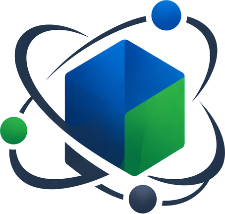

23 years at the frontier of speech AI and LLMs, from research to product.
That expertise, behind your decisions.
From humanoid speech processing, spoken dialogue, and signal processing to large language models, multi-agent systems, and real-time speech research in the US — I have spent 23 years on both the research frontier and the business front line. As someone who knows the technology from the inside, I support you end to end: from analyzing your problems to deciding what to adopt.
Where I can help
You don't know where to start with AI
From taking stock of your problems to prioritizing where to invest — I make "what to do first" clear.
You can't judge whether a vendor proposal is sound
A second opinion on estimates, architecture, and feasibility. Avoid over-investment and costly rework.
You want voice or conversational AI in your product
Design decisions for speech recognition, dialogue systems, and voice UX — what's possible now, and what's still hard.
You want generative AI and multi-agent systems to transform operations
What to delegate to LLM agents, and where to keep human judgment. From concept design through PoC validation to production.
You're struggling with AI hiring and team building
Who to hire, and in what order. Advice on designing and growing R&D organizations, from first-hand experience.
You want an outside perspective on your R&D direction
A sparring partner for your technology roadmap — opportunities and risks, seen from the research frontier.
Three ways to work together
Spot Consultation
A second opinion on technical decisions, a sounding board for AI strategy, or an evaluation of vendor proposals — a single, self-contained session.
Initial Diagnosis
I map your challenges and assess AI feasibility and priorities from a technical standpoint — so you know exactly where to start.
Monthly Advisory
Ongoing technical and strategic support: steering development, hiring and org building, and hands-on R&D guidance.
* All engagements are provided under a formal advisory agreement.
Start from the problem,
not the solution
Initiatives that start with "what could we do with this AI?" usually stall before implementation. My approach is problem-driven: first I translate your business challenges into the language of technology, then determine which technologies you should use now — and which you shouldn't.
Connecting problems to the right solutions requires deep knowledge of both. For 23 years I have stood on the research frontier and the business front line at once. Bridging problems and technology — that is where I find my value.
Career
-
2003 — 2018Hitachi, Ltd. — Research & Development Group
Research in source separation and speech enhancement. Developed the speech processing for the humanoid robot EMIEW. Led the speech and signal processing team. From 2016, drove joint research with Stanford University and others at Hitachi America.
-
2018 — 2021LINE
Principal Researcher, then Senior Manager leading an AI R&D organization.
-
2021 — 2024Amazon Web Services (US)
Principal Applied Scientist. Led real-time speech analytics R&D on the Chime SDK team, commercializing Voice Tone Analysis and more.
-
2024 — 2026Amazon Japan
Principal Applied Scientist / Senior Manager. Led generative AI projects in Japan and drove multi-agent R&D.
-
2026 —Decision Intelligence Lab — Founder
Independent. Supporting enterprise AI adoption as a technical advisor.
-
2026 —Waseda University — Visiting Researcher
Research on intelligent meeting agents and collective decision-making at the Perceptual Information Systems Lab.
Let's talk
Your challenge doesn't have to be well-defined yet. Inquiries starting from "we don't know what AI can do for us" are welcome.
EMAIL ME